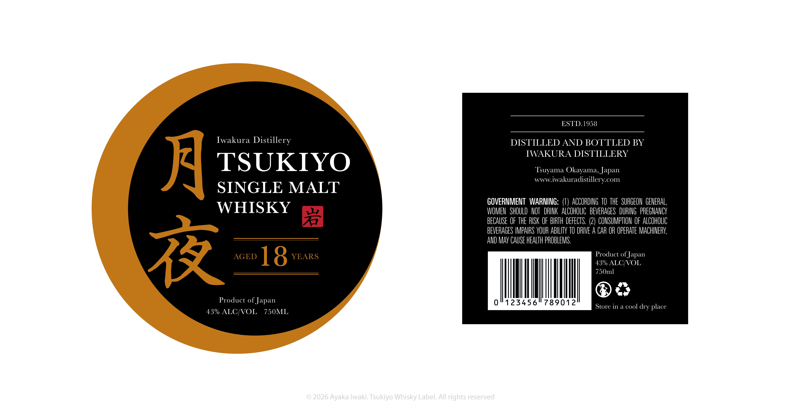

3D Motion, Rendering, Modeling
This product animation was my first fully 3D project, which I designed, modeled, animated, and rendered myself. There was a lot of trial and error involved in the process, but in the end, it has helped me learn a lot about Cinema 4D and 3D motion in general.
